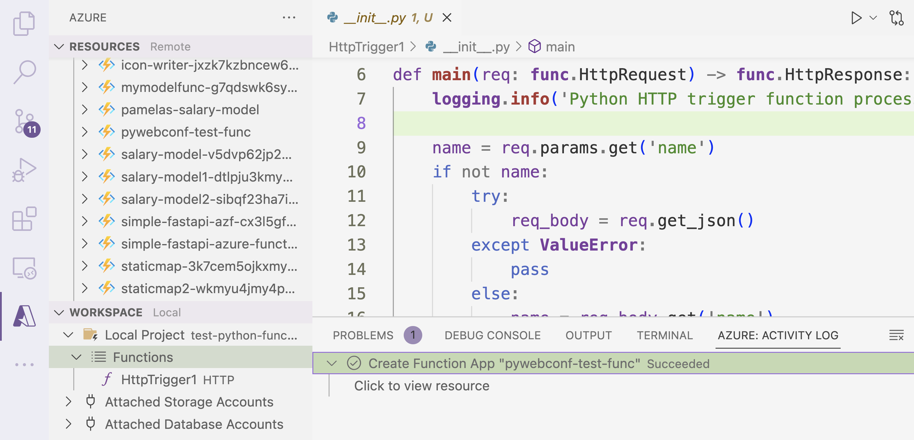
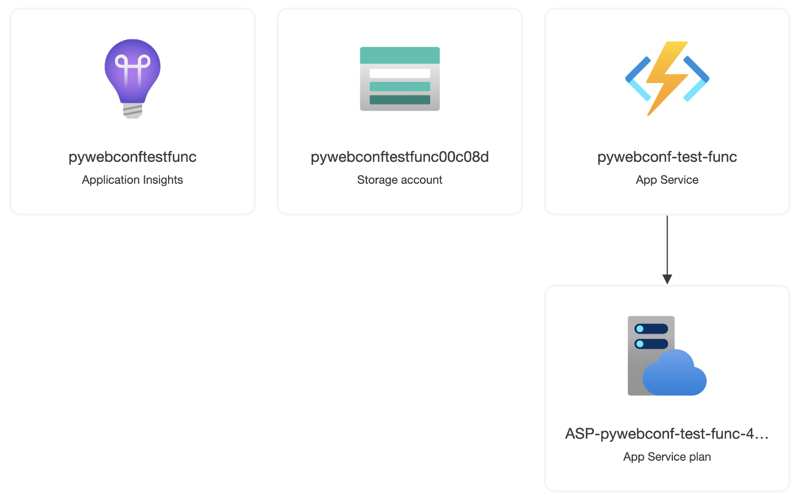
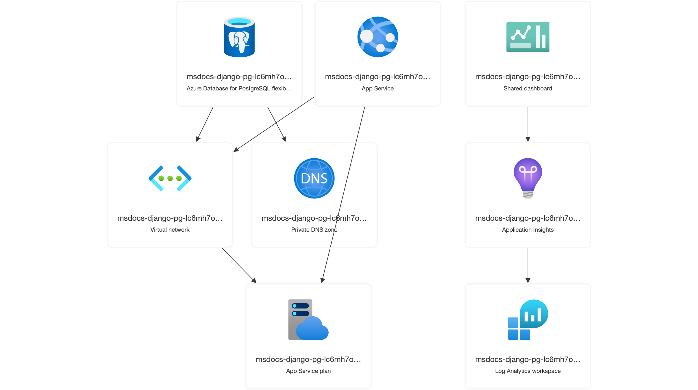
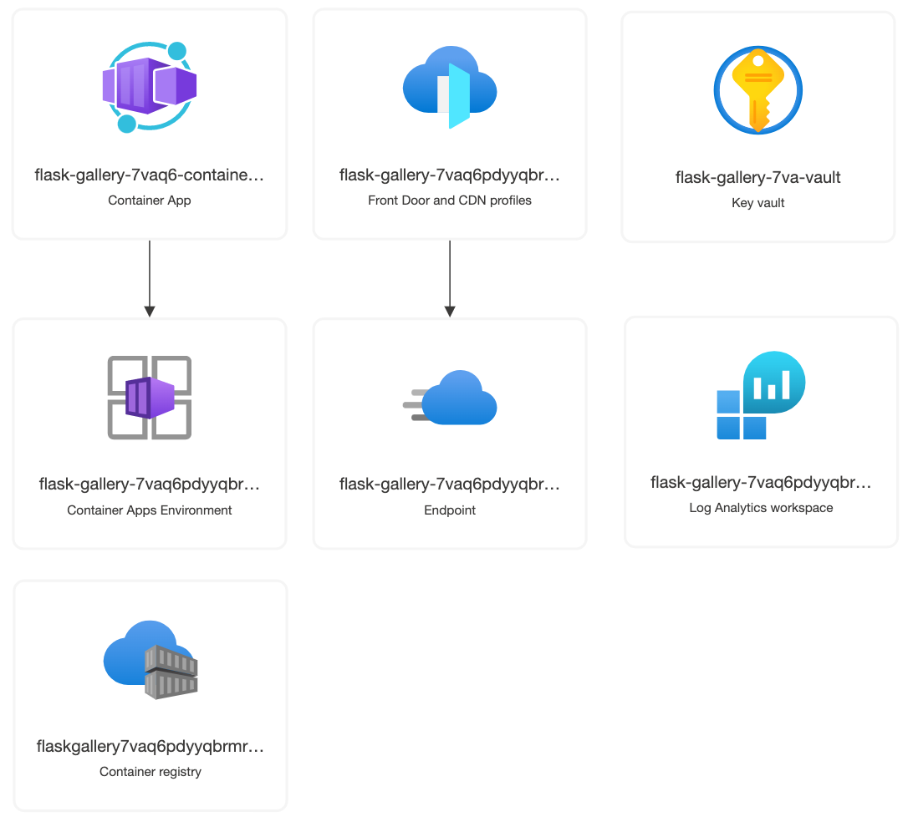
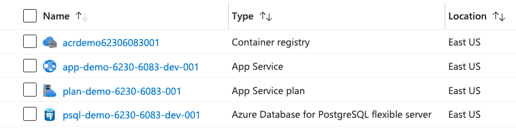
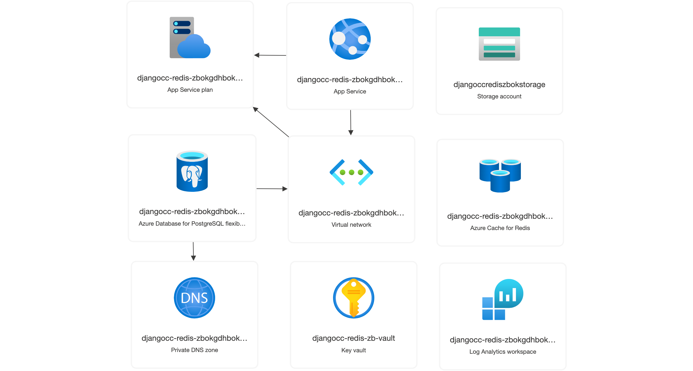

1-click deploys
of Python web apps
to Azure
- Press O or Escape for overview mode.
- Visit this link for a nice printable version
- Press the copy icon on the upper right of code blocks to copy the code
About me
pamelafox.org, @pamelafox, @pamelafox@fosstodon.org
I've been deploying web apps for a long time:
| When | What | Where |
|---|---|---|
| High school | LAMP stack | VPS |
| Python apps | Google App Engine | |
| Coursera | Django website | AWS EC2 |
| Khan Academy | Flask website | Google App Engine |
| Woebot | Chatbot + Website | AWS Lambda/Beanstalk |
| Microsoft | Python web apps | Azure |
#DontStopDeploying #ILikeToShipIt
About you!
Where do you deploy?
- VPS
- Azure
- AWS
- Google Cloud
- Heroku
- PythonAnywhere
- Other
Take the survey!
tinyurl.com/deploy-survey
My deployment journey
on Azure

Deploy #1: Azure Function
I used the Azure Functions extension to deploy:
🔗 Quickstart: Create a function in Azure with Python using VS Code
Deploy #1: Azure Function (Infra)
What got deployed?
Deploy #2: App Service + Postgres
I used an Azure Portal template plus Github workflow:


Deploy #2: App Service + Postgres (Infra)
What got deployed?
Deploy #3: Container Apps + CDN
I used a combo of Azure CLI commands and Portal UI.
az group create --location eastus --name fastapi-aca-rg
az acr create --resource-group fastapi-aca-rg --name pamelascontainerregistry --sku Basic
az acr login --name pamelascontainerregistry
az acr build --platform linux/amd64 -t pamelascontainerregistry.azurecr.io/fastapi-aca:latest -r pamelascontainerregistry .
az extension add --name containerapp --upgrade
az provider register --namespace Microsoft.App
az provider register --namespace Microsoft.OperationalInsights
az containerapp env create --name fastapi-aca-env --resource-group fastapi-aca-rg --location eastus
az acr credential show --name pamelascontainerregistry
az containerapp create --name fastapi-aca-app --resource-group fastapi-aca-rg \
--image pamelascontainerregistry.azurecr.io/fastapi-aca:latest --environment fastapi-aca-env \
--registry-server pamelascontainerregistry.azurecr.io --registry-username pamelascontainerregistry \
--registry-password --ingress external --target-port 80
🔗 Deploying a containerized Flask app to Azure Container Apps
Deploy #3: Container Apps + CDN (Infra)
What got deployed?
A few months later...
I want to update those apps!
😱 But how?
| VS Code | I can't remember what to click! |
|---|---|
| Portal | The UI changed! And how did I deploy? |
| Azure CLI | What commands do I need to re-run? And how did I deploy?? |
But then I discovered...
Azure Bicep
(Infrastructure-as-Code)

What is Bicep?
Bicep is an infrastructure-as-code (IAC) language, similar to Terraform but designed for Azure. Bicep declaratively defines Azure cloud resources.
resource web 'Microsoft.Web/sites@2022-03-01' = {
name: 'pamelas-app-service'
location: 'eastus'
kind: 'app,linux'
properties: {
serverFarmId: appServicePlan.id
siteConfig: {
linuxFxVersion: 'PYTHON|3.10'
}
}
resource appSettings 'config' = {
name: 'appsettings'
properties: {
DBNAME: 'django'
PGHOST: '${postgresServer.name}.postgres.database.azure.com'
PGUSER: 'admin'
PGPASS: adminPassword
}
}
}
resource postgresServer 'Microsoft.DBforPostgreSQL/flexibleServers@2022-01-20-preview' = {
name: 'pamelas-postgres-server'
location: 'eastus'
sku: {
name: 'Standard_B1ms'
tier: 'Burstable'
}
properties: {
version: '14'
administratorLogin: 'django'
administratorLoginPassword: adminPassword
storage: {
storageSizeGB: 128
}
}
}
IAC and you
What IAC language(s) have you used?
- None
- Terraform
- Bicep
- Helm chart
- Other
Take the survey!
tinyurl.com/iac-survey
Generating Bicep with NubesGen
One way to generate Bicep files for web apps is:
nubgesgen.com
👩🏼💻 Contribute here: github.com/microsoft/nubesgen
Demo: Provisioning with Bicep
Benefits of Bicep/IAC
- Includes parameters, variables, loops, and conditional logic to increase its flexibility and reusability
- Provisions can be parallelized (as long as dependencies are clear)
- Can be tracked with version control
🔗 Commit: Upgrade to 3.10 - Can be linted for validity
🔗az bicep build -f infra/main.bicep - Can be checked for security issues
🔗 microsoft/security-devops-action
Writing Bicep files
🤔 Should web app developers learn to write infrastructure-as-code?
- Install the Bicep extension for VS Code
- Open the Bicep reference
- Search Github for examples
- Create the resource in Portal and export the IAC
Read more in: Tips for writing Bicep files
Beyond provisioning
All I've shown so far is provisioning: creating resources inside an Azure account.
For a web app, we still need to actually deploy code to the hosting resource (Azure App Service, Azure Functions, etc.)
We could use CLI commands, Github integrations, Portal uploads. But there's a better way!
Azure Developer CLI (azd)
*This will soon be renamed. I don't know the new name!

Azure Developer CLI
This new CLI tool helps with all steps of the dev cycle:
| Step | Command |
|---|---|
| Provisioning | azd provision
|
| Deploying | azd deploy
|
| ⬆️ Both | azd up
|
| CI/CD | azd pipeline config
|
| Monitoring | azd monitor
|
Demo: azd up
First provisions, then deploys. Only re-provisions when Bicep resource definitions have changed.
Demo: azd deploy
If you only changed code, not infra, you can just deploy.
Demo: azd pipeline config
Configures the secrets for azure-dev.yaml, a Github workflow that provisions and deploys.
Components of an azd project
infra/
| Contains all the infra in Bicep or Terraform files |
azure.yaml
| Specifies what code to deploy to which resource |
.github/
| Contains workflow for deploying |
| ✨ Bonus: | |
.vscode/
| Settings for running local server + debugging |
.devcontainer/
| Support for Dev Containers/GitHub Codespaces |
Finding azd templates
You could write the required files yourself, or, better, start from a template that's the most like your project.
| App Service | Functions | Container Apps | |
|---|---|---|---|
| Flask | Simple App | Simple API |
Simple App Simple API + CDN: App + CDN: API |
| + PostgreSQL |
Quiz app + VNET: Reviews app | 🚧 | Surveys App |
| FastAPI | Salary API |
Simple API + APIM: Simple API + CDN: Maps API | Simple API |
| + MongoDB | Todo API | Todo API | Todo API |
| Django + PG |
Quiz app
+ VNET: Reviews app + VNET: Booking app cookiecutter | 🚧 | 🚧 |
💡 Finding similar architecture is more important than same framework.
Finding more azd templates
- Look through the AZD templates gallery (use the filters!)
- Search Github for azd-templates
🐘 Need help? Toot at me!
🎁 Make a new one? Contribute it!
Example: FastAPI + Function + CDN
Try it at: staticmaps-rk5lctcdqzvbs-cdn-endpoint.azureedge.net/
Code at: github.com/pamelafox/staticmaps-function

Example: APIFlask + ACA + CDN
Try it at:
https://flask-charts-aca-zizgwsqsaolso-cdn-endpoint.azureedge.net/charts/pie
Code at: github.com/pamelafox/flask-charts-api-container-app

Example: Django + App Service + Redis
Try it at: https://djangocc-redis-zbokgdhbokg6a-app-service.azurewebsites.net/
Code at: github.com/pamelafox/cookiecutter-django-output / azure branch
Any questions?